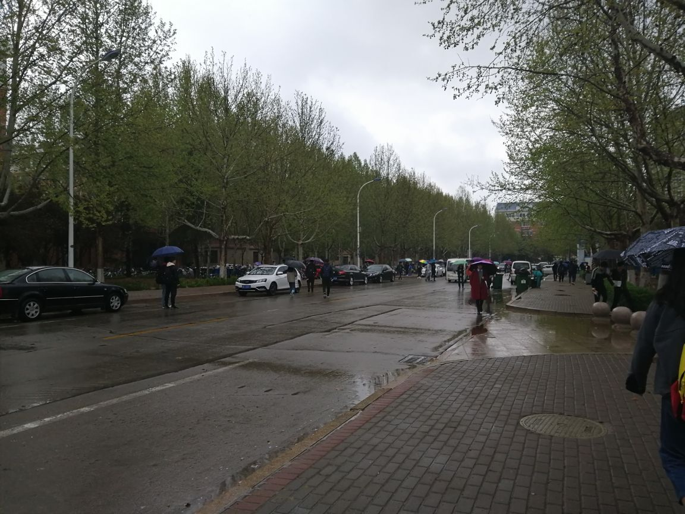
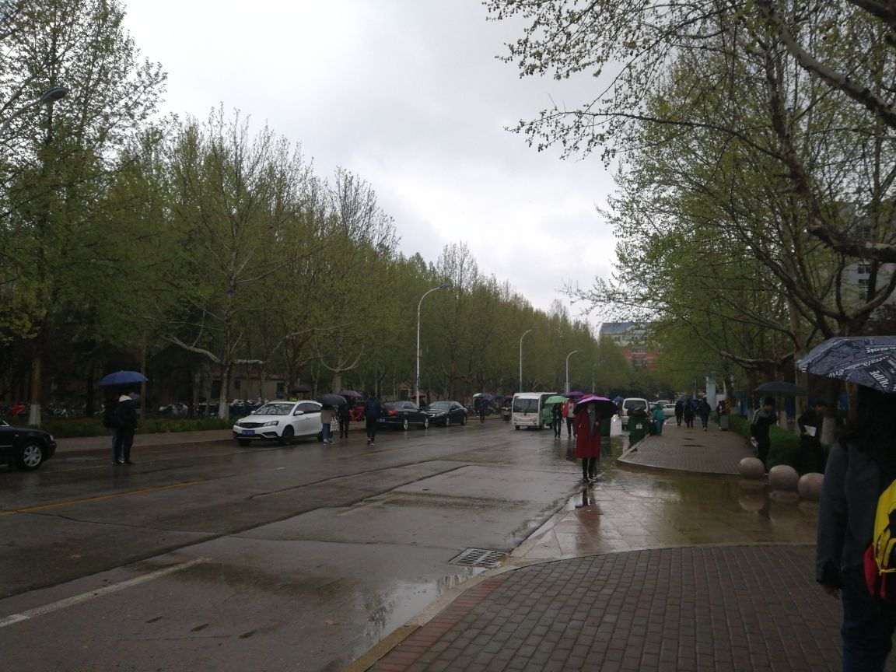

前一天晚，老班来哥说
然后今天早上四点多就醒了，外面的风，把窗户拍的呼呼响，好像还还干翻了楼下的电瓶车，它也开始响……我只能就着外面的风卷云雨，忖量着起来外面会是怎样天。
虽然外面大风小雨的，不多一会，我还是能睡着的，直到早上，爬起来的时候还在犹豫要不要听来哥的，墨迹了一会，我还是穿厚点罢。
一出门我就意识到来哥是对的，早上外面还是下着雨刮着风，最后雨虽然小了，但是还淅淅沥沥的一直到中午…
风雨带来的降温一直持续到晚上，我也不知道最终能冷到什么时候，风是一天没断过，吹斜一排排柳树，吹落树上一朵朵不知名的花……只可惜了，前些日子学校里开的那些我不认识的粉花和刚发的芽，我觉得是有些好看的，经过一天风雨折腾，地上遍是嫩绿的芽了，即便树上还挂着不少的花，但都是有些蔫的，花瓣上沾满水滴，却倒是美艳的很…
现在已经是四月了，应当是是春夏之交，但偏偏热不起来，又偶尔降个温，日常就是不冷不热，且一天之内冷热没有过渡，骤冷骤热，感冒的人数不胜数…
这样说的话，前两天还暖和过几天，只是刚刚暖和没几天就马上降温，想起那首好诗：“春寒料峭，冻杀年少。”
像今天这种小雨下起来软绵绵的，只会让人心烦，甚不如来一场轰轰烈烈的大雨…
现在是四季不分明，冷热不均分。
又说到这，天气于我又何干？不过是多穿少穿衣服的问题，我还是要奔波于教室之间，浪费我那微不足道的时间…
济南果然没有春天！

